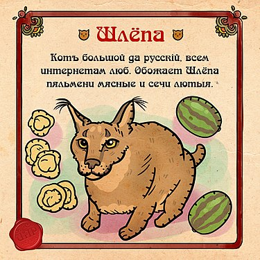

Добро пожаловать
Добро пожаловать
Добро пожаловать
Добро пожаловать

 Navigation: Внутренние страницы: Interesting pages:
Navigation: Внутренние страницы: Interesting pages:|
|
|
|
Изображения и видео с домашними кошками (жарг. ко́тэ́) — один из самых просматриваемых видов контента в Интернете,
в частности крайне популярны макросы[en] в жанре lolcat. ThoughtCatalog называет кошек «неофициальным талисманом Интернета».
Тема привлекает внимание учёных и критиков, пытающихся разобраться в причинах культовой популярности подобной «низкой» формы
искусства. Это может показаться легкомысленным, но через интернет-контент с «котиками» люди реально взаимодействуют с медиа
и совершают культурный обмен[2]. По мнению некоторых исследователей, в лучших образцах такого, казалось бы, совсем
незамысловатого контента есть глубина и содержательность, кроме того, он оказывает позитивное психологическое воздействие,
сопоставимое по эффективности с реальной пет-терапией.
Отдельные кошки, например, Сердитый Котик и Лил Баб, получили популярность в интернете благодаря своей необычной внешности.
Соус Тардар (Tardar Sauce, 4 апреля 2012 года — 14 мая 2019 года), более известная под интернет-именем «Сердитый Котик»
(Grumpy Cat), стала интернет-знаменитостью, благодаря «сварливому» выражению морды. Её владелец, Табата Бандесен,
говорит, что это следствие неправильного прикуса и кошачьей карликовости. Популярность Сердитого Котика началась с
фотографии, размещенной на социальном новостном сайте Reddit Брайаном Бандесеном, братом Табаты 22 сентября 2012 года.
Это было сделано в формате макроса с соответствующей «сварливой» надписью. Официальная страница Сердитого Котика на Facebook
набрала более 7 миллионов «лайков». 30 мая 2013 года Сердитый Котик появился на первой странице The Wall Street Journal,
а 7 октября 2013 года — на обложке New York Magazine. В августе 2015 года стало известно, что Сердитый Котик получит
собственную восковую копию в музее Мадам Тюссо в Сан-Франциско.

|  |

|